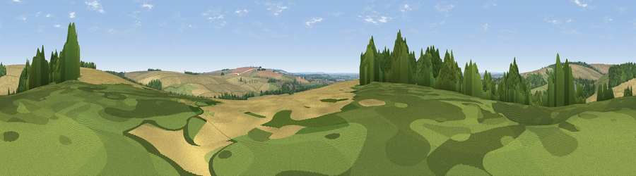

Viewpoint near Londesborough
#37768 in England · top 82% of its area beats it · near Londesborough · access?Where it is
The exact computed spot (SE 88425 44875). Click the marker for map links.
Public access: no public right of way or access land is recorded at this exact spot — it may be on private land. Computed from Natural England's CRoW access layer and OpenStreetMap rights of way — not the legal definitive map. Always verify locally.
The view, rendered

A 360° render of this exact spot computed from the terrain model, tree cover and land cover — summer colours, afternoon light, calibrated against photographs of famous viewpoints. Real trees, hedges and buildings will differ in detail.
The panorama
Grey silhouette: terrain skyline in each direction (720 bearings, Earth curvature and refraction included). Dashed green: skyline with trees (+15 m) and buildings (+8 m) as obstacles. Blue strip: how far the ground is visible on each bearing.
Where the view opens
Wedge length = distance to the farthest visible ground on that bearing (vegetation-aware). Rings at 10, 25 and 50 km.
What fills the view
58% cropland · 22% grassland · 18% woodland · 1% built-up
Angular shares of the visible panorama (visual magnitude), not map area. Landscape diversity 0.44 (0–1 Shannon).
Key numbers
More beautiful places nearby
The staircase of upgrades: each row has a higher view potential than everything closer. Driving times are estimates from straight-line distance, calibrated against real road routing — check an actual route before setting out.
| Place | Direction | Drive | Score |
|---|---|---|---|
| Viewpoint near Londesborough | NE · 0 km | ~2 min | 36.6 |
| Viewpoint near Nunburnholme | NW · 3 km | ~8 min | 68.5 |
| Viewpoint near Millington | NW · 11 km | ~21 min | 69.7 |
| Viewpoint near Bishop Wilton | NW · 13 km | ~24 min | 71.5 |
| Garrowby Hill (A166 crest) | NW · 14 km | ~26 min | 71.9 |
| Viewpoint near Acklam | NNW · 18 km | ~31 min | 73.8 |
| Beacon Hill | NE · 39 km | ~59 min | 79.1 |
| Viewpoint near Speeton | NE · 40 km | ~59 min | 80.0 |
53.89252, -0.65597 · source: screening · position refined by local search. Computed location — check access rights before visiting.